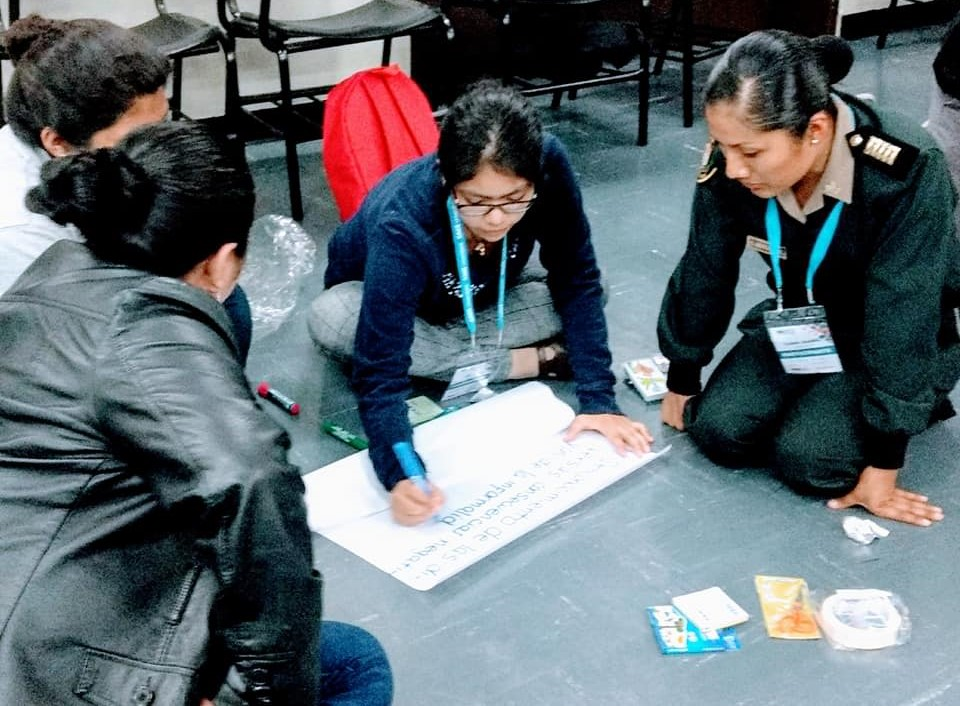
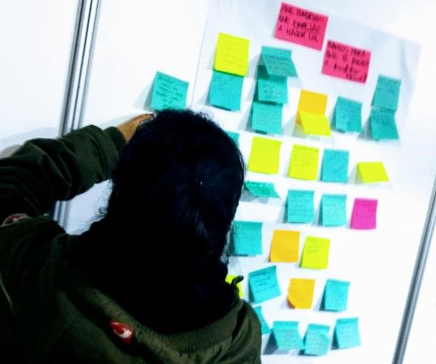
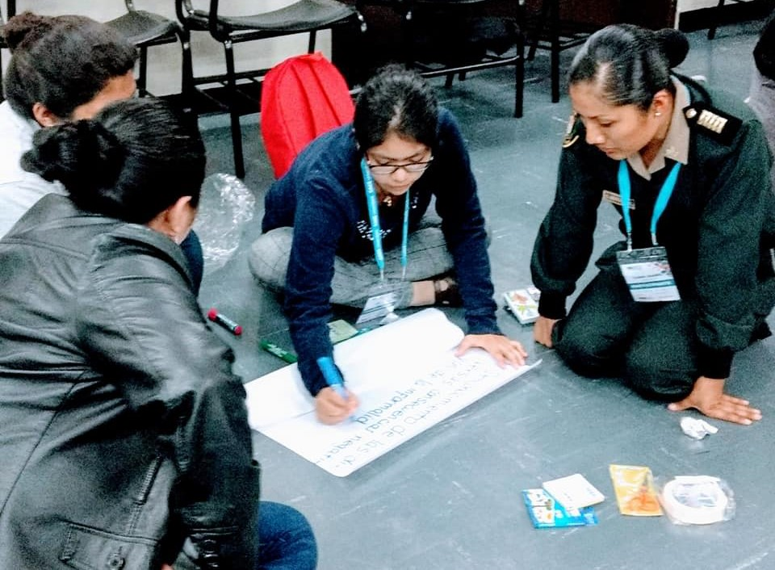
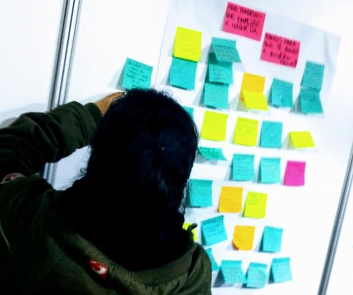

Melody Durand Silva
melody.durand.silva@gmail.com
¡Hola!
Soy una persona apasionada por los proyectos, AMO innovar, busco constantemente proponer soluciones integrales centradas en personas, procesos y tecnología.
Soy profesional en Sistemas e Ingeniera Industrial colegiada; con más de 6 años de experiencia gestionando proyectos, orientada a la ideación, planificación y control de proyectos.
Soy tutor docente (a tiempo parcial) del curso de Procesos para Ingeniería en la Universidad Tecnológica del Perú.
Soy sensible al arte, gusto de la fotografía, marinera, disfruto correr y conocer a personas de diferentes culturas.
Me motiva saber que es posible crear un mejor mundo.
Aportes a startups:
- Joinnus, testing MVP.
- Kambista, testing experiencia usuario.
Habilidades
Investigación
Diagrama de secuencia
Arquitectura de la información
Análisis de datos
Flujos de usuario
Focus group
Entrevistas
Ideación
Diagrama de afinidad
Mapa de experiencia
Design thinking
Lluvia de ideas
Storytelling
Arquetipo
Gestión
Herramientas de calidad
Mejora continua
Mentoring
Coaching
PMBOK
SCRUM
Testing
Prueba de esfuerzo (stress)
Prueba de performance
Pruebas de usabilidad
Prueba funcionalidad
Proyectos

Eventos y talleres
Los eventos para mi representa un espacio de aprendizaje y de mantener presencia en nuevas líneas de pensamiento para gestionar proyectos.
Compartir conocimiento en metodologías agiles, gestión de proyectos y habilidades blandas,se ha vuelto para mí en un manera de trascender en la vida de personas.
Estos espacios me han permitido aprender de forma constante; aprendo de sus experiencias, industrias y culturas.
✔️Vídeo como presentadora ASQ - UTP.
✔️Vídeo visitando las instalaciones de Crack de code.
Ponente - Workshop innovación

Ponente - Taller de innovación en la PMO
Facilitadora - taller de habilidades blandas
Ponente - taller de liderazgo transformador
Facilitadora - Design thinking
Ponente - IEEE Womeng UTP
CERTIFICACIONES Y RECONOCIMIENTOS
Mi mayor satisfacción es ser parte de la solución, busco proponer ideas e implementarlas.
No puedo negar que cada vez que he recibido un reconomiento siento satisfacción por los resultados, pero siento más satisfacción ver como un problema se convierte en una oportunidad para hacer mejor la experiencia del usuario.
- Colegiatura en Ingeniería Industrial
- SCRUM Foundations Professional Certificate
- SCRUM Master Professional Certificate
Reconocimiento del público - Desafío CADE universitario
Reconocimiento a la innovación

Primer puesto en el concurso de Innovación
CONTACTO
Gracias por entrar a mi web.
Si quieres tomar contacto conmigo, no dudes en escribirme.


 


